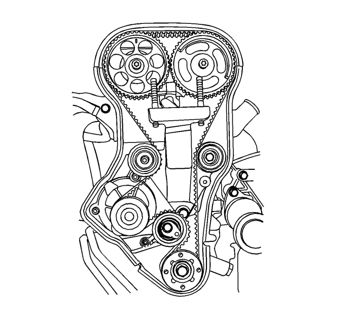
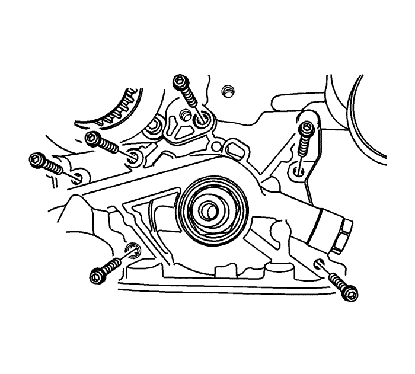
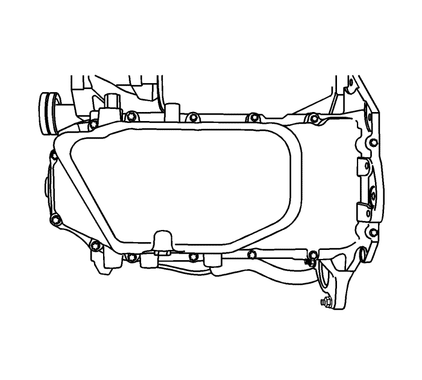

Sustitución del cigüeñal
Herramientas especiales
| • | EN-36792 Herramienta de montaje del retén de aceite de la parte trasera del cigüeñal |
| • | EN-45059 Medidor de ángulos |
Si desea informarse sobre herramientas regionales equivalentes, consultar Herramientas especiales .
Procedimiento de desmontaje
Nota: Asegúrese de que no se raye, melle o dañe el cigüeñal.
- Desmonte el motor. Consultar Sustitución del motor : LE5 .
- Desmonte los tornillos del volante motor o de la placa flexible.
- Desmonte el volante motor o la placa flexible.
- Desmontar el retén de aceite trasero del cigüeñal.
- Monte el conjunto del motor a un soporte motor.
- Quite los tornillos de la polea del cigüeñal.
- Desmonte la polea del cigüeñal.

- Quite los tornillos de la tapa delantera de la correa de distribución.
- Desmonte la tapa delantera de la correa de distribución.

- Afloje el tornillo del tensor automático de la correa de la distribución.
- Gire la llave hexagonal del tensor automático de la correa de la distribución en sentido horario para aflojar la tensión.
- Quite la tuerca y el tornillo de las poleas locas de la correa de distribución.
- Desmonte las poleas locas de la correa de distribución.
- Retire la correa dentada.
- Quite los tornillos del soporte del adaptador de fijación del motor.
- Desmote el soporte del adaptador de fijación del motor.

- Desconecte los cables de encendido de las bujías.
- Desmontar la tapa del árbol de levas. Consultar Sustitución de la tapa de los árboles de levas .

Nota: Asegúrese de que no se rayen, mellen o dañen los árboles de levas.
- Mientras sujeta el árbol de levas de admisión firmemente en su sitio, desmonte el tornillo del piñón del árbol de levas de admisión.
- Desmonte el engranaje del árbol de levas de admisión.
- Mientras sujeta el árbol de levas de escape firmemente en su sitio, desmonte el tornillo del piñón del árbol de levas de escape.
- Desmonte el engranaje del árbol de levas de escape.

- Desmonte el piñón del cigüeñal.

- Desmonte los tornillos de la tapa trasera de la correa de la distribución y la tapa.
- Gire el motor en el soporte de motor (1).
- Desmonte los tornillos de fijación del cárter de aceite.
- Desmonte el cárter de aceite.
- Retire los pernos del tubo de succión de aceite.
- Desmonte la tubería de aspiración de aceite con la junta tórica.
- Retire los pernos del rascador del cárter de aceite.
- Desmonte los rascadores del cárter de aceite.

- Desmonte los tornillos de retención de la bomba de aceite.
- Desmonte la bomba de aceite.

- Marque las tapas de cojinetes de las bielas para el montaje.
- Desmonte los tornillos de las tapas de los cojinetes de biela de todos los pistones.
- Desmonte las tapas de los cojinetes de biela y los semicojinetes inferiores de las bielas.

- Marque el orden de las tapas de cojinete del cigüeñal para el montaje.
- Desmonte los tornillos de las tapas de cojinete del cigüeñal.
- Desmonte las tapas de cojinete y los semicojinetes inferiores del cigüeñal.
- Desmonte el cigüeñal.
- Limpie las piezas si fuera necesario.
Procedimiento de montaje
- Recubra los cojinetes del cigüeñal con aceite de motor.
- Si sustituye el cigüeñal, transfiera el reluctor al nuevo cigüeñal.
- Monte el cigüeñal.
- Monte los semicojinetes inferiores del cigüeñal en las tapas de los cojinetes.
- Compruebe el juego axial del cigüeñal con los cojinetes del cigüeñal montados.
- Compruebe el juego axial permisible del cigüeñal. Consultar Especificaciones mecánicas del motor : LE5, LE9 .
Nota: Engrase los apoyos y lubrique ligeramente los cojinetes del cigüeñal, de forma que el hilo plástico no se rompa al desmontar las tapas de cojinete del cigüeñal.
- Con el cigüeñal montado en los cojinetes delantero y trasero del cigüeñal, compruebe la excentricidad permisible del apoyo central del cigüeñal. Consultar Especificaciones mecánicas del motor : LE5, LE9 .
- Compruebe las holguras de todos los cojinetes del cigüeñal con hilo plástico disponible comercialmente (hilos de plástico dúctil).
- Corte los hilos plásticos con una longitud igual a la anchura de los cojinetes. Colóquelos axialmente entre los apoyos y los cojinetes del cigüeñal.
Precaución: Consulte Precaución con las fijaciones en la sección Prólogo
- Monte las tapas de cojinete del cigüeñal y los tornillos. Apriete los tornillos hasta 50 N·m (37 lib. pie) más 45 grados y 15 grados utilizando el medidor EN-45059.
- Desmonte los tornillos de las tapas de cojinete del cigüeñal y las tapas.
- Mida la anchura del hilo plástico aplastado utilizando una regla. (Hay hilo plástico disponible para diferentes márgenes de tolerancia.)
- Compruebe si las holguras de los cojinetes están en los márgenes de tolerancia permisibles. Consultar Especificaciones mecánicas del motor : LE5, LE9 .
- Aplique un cordón de sellador adhesivo a las ranuras de las tapas de cojinete del cigüeñal.
- Monte las tapas de cojinete del cigüeñal en el bloque motor.
Nota: Engrase los apoyos y lubrique ligeramente los cojinetes de la varilla de unión, de forma que el hilo plástico no se rompa al desmontar las tapas de cojinete de la varilla de unión.
- Apriete las tapas de cojinete del cigüeñal con tornillos nuevos. Apriete los pernos a 50 N·m (37 lib. pie) con una llave dinamométrica. Utilice el medidor EN-45059 (1) para apretar los cojinetes del cigüeñal otros 45 grados y 15 grados.
- Compruebe las holguras de todos los cojinetes de la varilla de unión con hilo plástico disponible comercialmente (hilos de plástico dúctil).
- Corte los hilos plásticos con una longitud igual a la anchura de los cojinetes de la varilla de unión. Colóquelos axialmente entre las muñequillas y los cojinetes de biela.
- Monte las tapas de los cojinetes de biela. Apriete los tornillos de las tapas de los cojinetes de biela a 35 N·m (26 lib. pie) con una llave dinamométrica. Utilice el medidor EN-45059 para apretar los pernos de las tapas de cojinetes de la varilla de unión otros 45 grados más 15 grados.
- Desmonte las tapas de los cojinetes de biela.
- Mida la anchura del hilo plástico aplastado utilizando una regla. (Hay hilo plástico disponible para diferentes márgenes de tolerancia.)
- Compruebe si las holguras de los cojinetes están en los márgenes de tolerancia permisibles. Consultar Especificaciones mecánicas del motor : LE5, LE9 .
- Monte las tapas de los cojinetes de biela en las bielas.
- Apriete los sombreretes de los cojinetes de biela con unos tornillos nuevos y el medidor EN-45059 (1).
- Monte la bomba de aceite.
- Monte los tornillos de retención de la bomba de aceite y apriételos hasta 10 N·m (89 lib. pulg.).
- Monte la unidad de equilibrado del cigüeñal.
- Monte los tornillos de fijación de la unidad de equilibrado del cigüeñal. Apriete los pernos a 20 N·m (15 lib. pie) y gire los pernos otros 45 grados con el medidor EN-45059.

- Monte los rascadores del cárter de aceite.
- Monte los tornillos de retención del raspador del cárter del aceite y apriételos hasta 8 N·m (71 lib. pulg.).
- Monte la tubería de aspiración de aceite con una junta tórica nueva.
- Monte los tornillos de retención del tubo de aspiración de aceite y apriételos hasta 8 N·m (71 lib. pulg.).

- Aplique sellador en la superficie de contacto del cárter de aceite.
- Montar el cárter de aceite.
- Monte los tornillos de retención del cárter de aceite y apriételos hasta 10 N·m (89 lib. pulg.).
- Gire el motor en el soporte.
- Monte la tapa trasera de la correa de distribución.
- Monte los tornillos de la tapa trasera de la correa de la distribución.
- Monte el piñón del cigüeñal con el tornillo. Apriete el tornillo hasta 135 N·m (100 lib. pie) más 30 grados, más 10 grados utilizando el medidor EN-45059 (1).
- Monte el soporte de apoyo del adaptador de alojamiento del motor y los tornillos y apriételos hasta 45 N·m (33 lib. pie).
- Monte la polea loca de la correa de distribución.
- Monte el tornillo y la tuerca de la polea tensora de la correa de distribución y apriételos a 25 N·m (18 lib. pie).

Nota: Asegúrese de que no se rayen, mellen o dañen los árboles de levas.
- Monte el piñón del árbol de levas de admisión.
- Mientras sujeta firmemente el árbol de levas de admisión en su sitio, monte el tornillo del piñón. Apriete el tornillo del nivel de marcha del árbol de levas de admisión hasta 50 N·m (37 lib. pie) más 60 grados y 15 grados utilizando el medidor EN-45059.
- Monte el piñón del árbol de levas de escape.
- Mientras sujeta firmemente el árbol de levas de escape en su sitio, monte el tornillo del piñón. Apriete los tornillos del nivel de marcha del árbol de levas de escape hasta 50 N·m (37 lib. pie) más 60 grados y 15 grados utilizando el medidor EN-45059.
- Monte el dispositivo tensor automático de la correa de distribución y apriete los pernos hasta 25 N·m (18 lib. pie).
- Monte la correa de distribución. Consultar Sustitución de la correa de distribución .
- Ajuste la tensión de la correa de la distribución. Consultar Inspección y ajuste de la correa de distribución : LE5 .
- Aplique una pequeña cantidad de sellador para juntas en las esquinas de las tapas delanteras de los árboles de levas y en la parte superior de la junta entre la tapa de la culata trasera y la culata.
- Monte la tapa del árbol de levas. Consultar Sustitución de la tapa de los árboles de levas .
- Conecte los cables de encendido a las bujías.
- Conecte el manguito del respiradero de la tapa de la culata y el manguito de PCV a la tapa de la culata.
- Monte la tapa delantera de la correa de distribución.
- Monte los pernos de la cubierta de la correa de distribución delantera y apriételos a 6 N·m (53 lib. pulg.).
- Monte el elevador en el soporte del motor y eleve el conjunto del motor lo suficiente como para descargar de peso el caballete del motor.
- Desmonte el motor del soporte de motor.

- Monte un nuevo retén de aceite trasero del cigüeñal con la herramienta de montaje EN-36792 (1).
- Monte el volante motor o la placa flexible.
- Coloque los pernos del volante motor o de la placa flexible y apriételos a 65 N·m (48 lib. pie). Utilice el medidor EN-45059 (1) para apretar los pernos del volante motor otros 30 grados más 15 grados. En vehículos con transeje automático, apriete los pernos de la placa flexible a 45 N·m (33 lib. pie).
- Monte el motor en el vehículo. Consultar Sustitución del motor : LE5 .
| © Copyright Chevrolet Europe. All rights reserved |